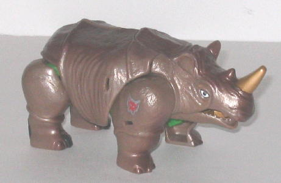

Beast
Wars 10th Anniversary Edition Toys
Beast
Wars 10th Anniversary Edition Toys


In 2006, in celebration of
the 10th Anniversary of the start of
Beast
Wars
, Hasbro re-released some of the early Beast Wars toys. The first
six 10th Anniversary toys in the first "series" sported more show-accurate
color schemes than the toys' original paint jobs, and although the prices
for the deluxe-sized toys were bumped up to $15 U.S., extras were included
with each of the toys. In the case of the first "series"-- consisting of
the first two waves of the 10th Anniversary toys-- they each came with
1/6th of Transmutate, a rather popular character from one episode of the
TV series. The second "series" consisted of brand new molds for Optimus
Primal and Megatron, to make them look "fiercer" and tie them in with the
current line's (
Cybertron
) aesthetic-- they
were also given Jungle Planet Cyber Key gimmicks. Now deluxe-sized as well,
Primal and Megatron came with miniature versions of their respective factions'
ships. All Beast Wars 10th Anniversary toys also came with a DVD containing
an episode from the series starring that character, and the tech specs
on the back more accurately reflected the actual character's strengths
and weaknesses than the original version's tech specs.
 Cheetor
Cheetor
Dinobot
Megatron
(w/ mini Predacon ship)
Optimus
Primal (w/ mini Axalon ship)
Optimus
Primal vs. Megatron (Original toy remolds) [Toys "R" Us Exclusive]
Predacon
Tarantulus
Rattrap
Transmetal (w/ review of Transmutate)
Rhinox
Waspinator
Back to Model
Commentary Index